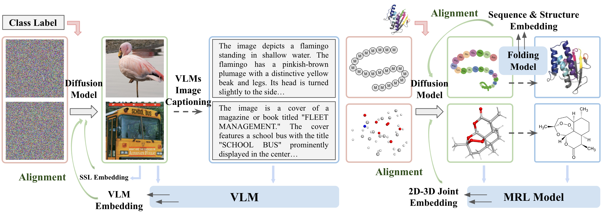
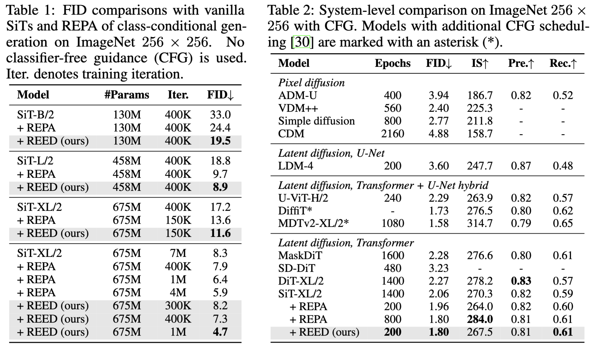
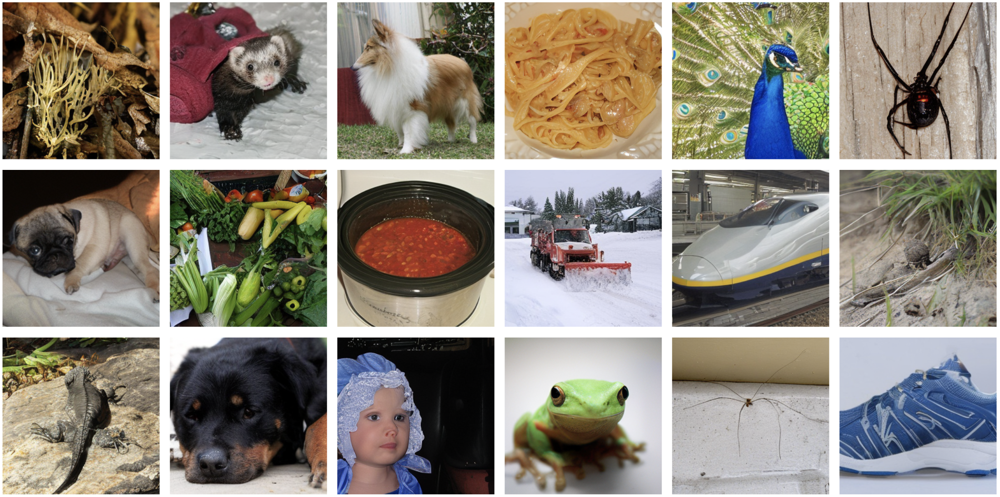
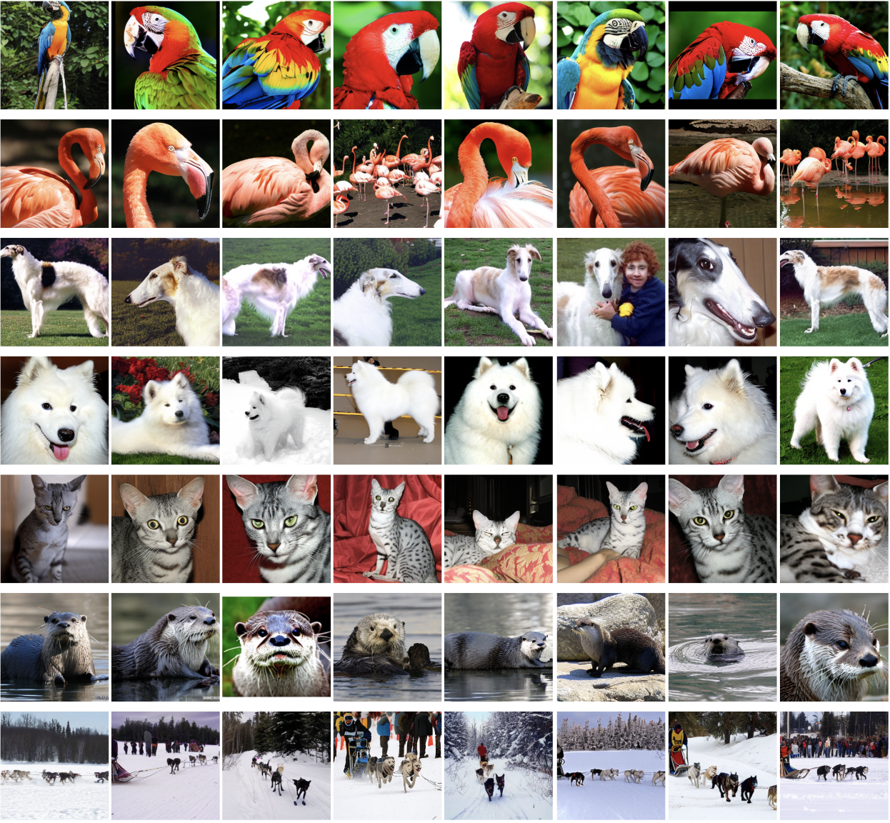
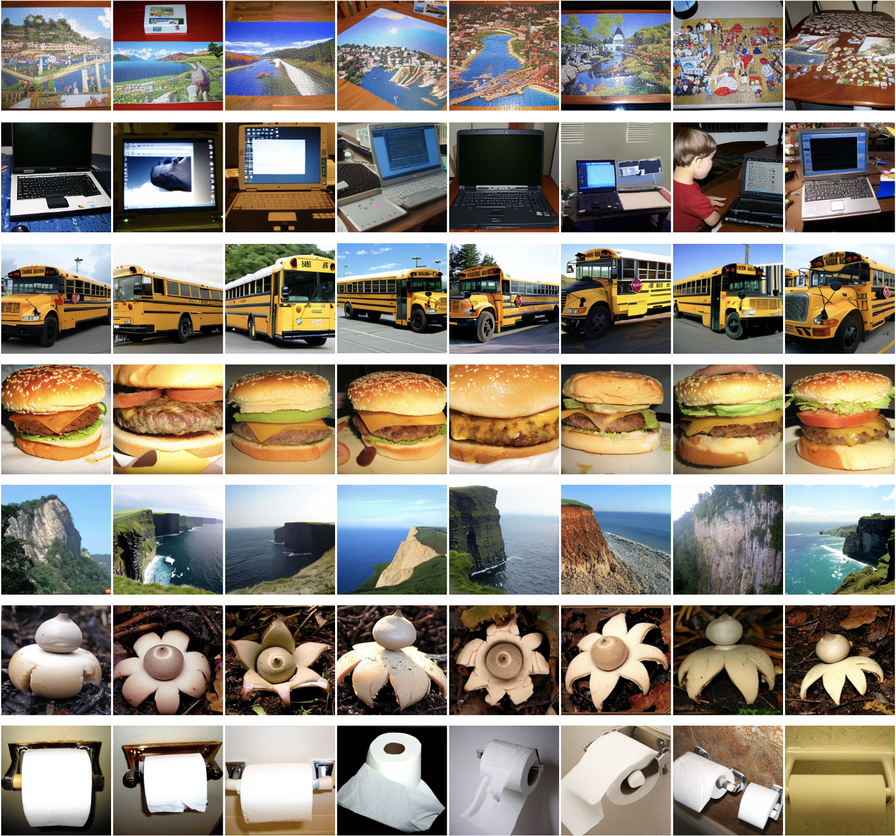
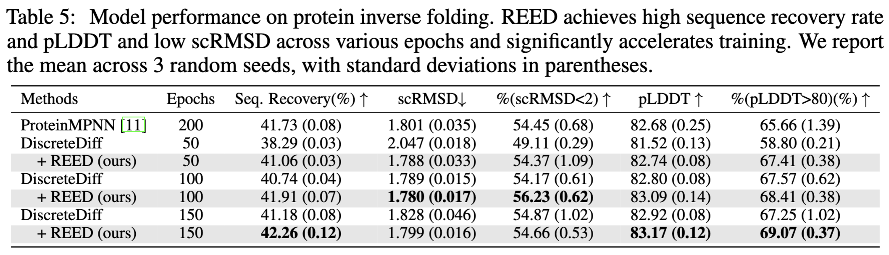
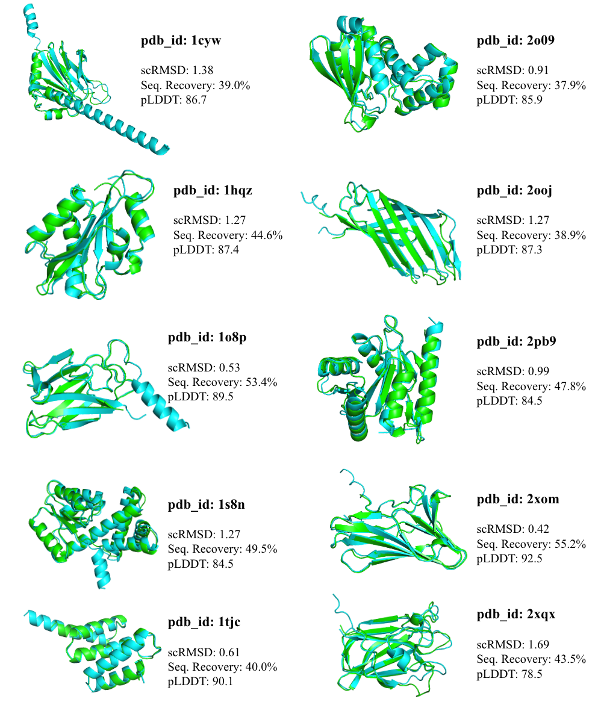
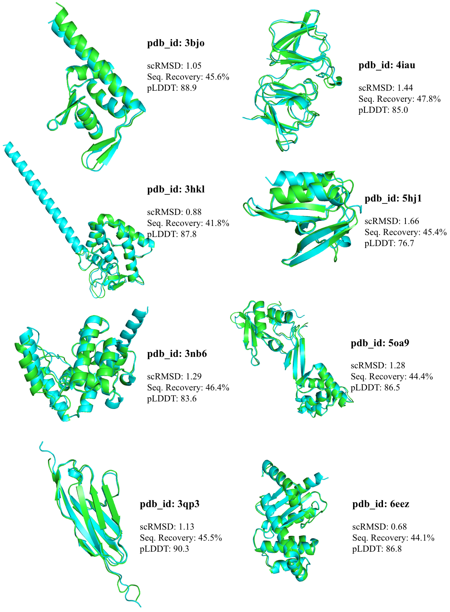
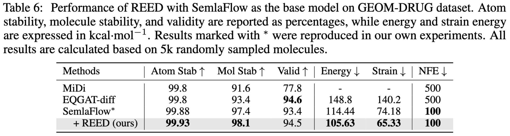
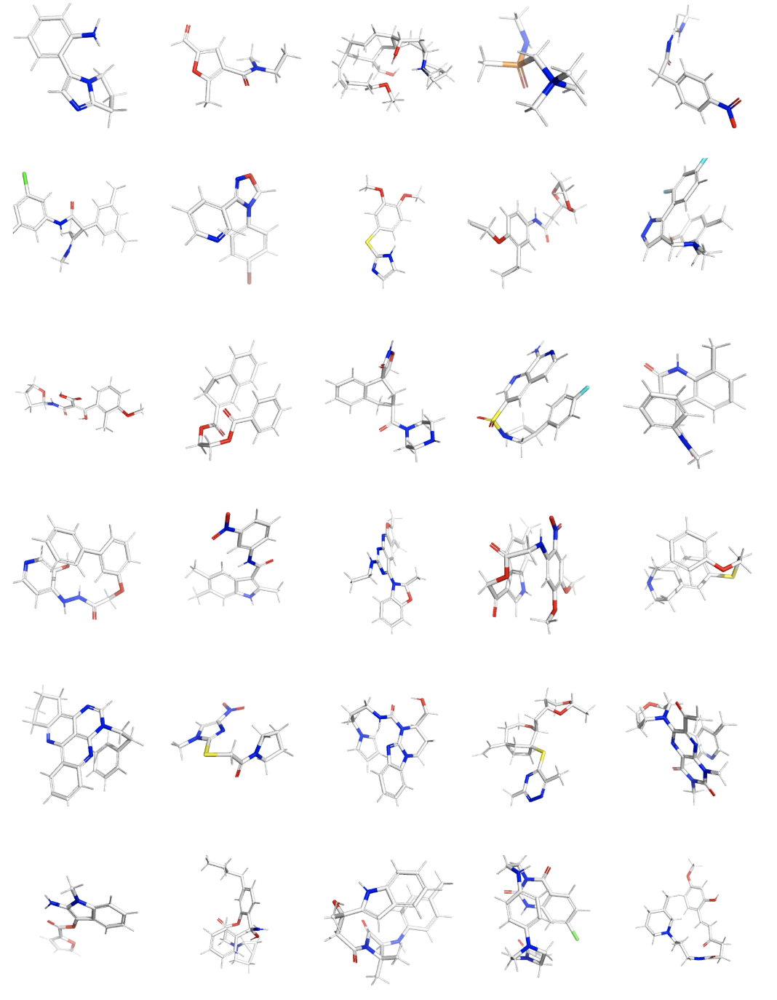

REED (Representation-Enhanced Elucidation of Diffusion) is a theoretical and practical
framework for guiding diffusion models with high-quality pretrained representations.
Theoretical Characterizations: REED systematically incorporates external representations into the diffusion
process by decomposing the reverse process and injecting guidance at optimal timesteps. This
perspective generalizes prior methods like REPA and RCG and
highlights how to balance representation learning and data generation. Learn more →
Algorithmic Innovations: We introduce two new strategies for enhancing representation alignment in diffusion models: aligning with multimodal representations from synthetic auxiliary modalities and an optimal training curriculum that balances representation learning and generation. Learn more →
Empirical Results: REED demonstrates superior performance and accelerated training across diverse generation tasks, including image generation, protein inverse folding, and molecule generation.In particular, on the class-conditional ImageNet 256×256 benchmark, REED achieves 23.3 times faster training than SiT-XL and 4 times speedup over REPA. Learn more →
Theoretical Characterizations
We introduce a general theoretical framework for representation-enhanced diffusion models.
Building on the DDPM framework, we explore how representations can offer additional
information and enhance the diffusion generation process. We provide a brief overview below.
For more details, please refer to Section 2 in our paper.
Variational Bound with Decomposed Probabilistic Framework.
We build a variational framework for diffusion models augmented with pretrained
representations. By decomposing the joint probability $p(x_{0:T}, z)$ into conditional components
and introducing a timestep weight schedule $\alpha_t$, the framework controls when and how the
representation $z$ influences the reverse diffusion process. Injecting
representations earlier yields more accurate conditional transitions but may degrade the
approximation of $p(z|x_t)$; therefore, REED uses a weighted combination of conditional and
unconditional paths. The resulting hybrid distribution $\tilde{p}_\theta(x_{t-1} | x_t, z; A_t)$
gradually phases in representation guidance during training.
Multi-Latent Representation Structure. The expressiveness of latent representations can be significantly enhanced through a multi-latent
structure, as shown in prior works like NVAE. Instead of modeling a single representation $z$, we extend our formulation to a series of representations
$\{z_l\}_{l=1}^L$, each indicating a different level of abstraction. This inspires us to leverage multimodal representations for REED as multi-level latents.
Connecting Existing Approaches, RCG and REPA. Our theoretical formulation provides a general and flexible framework for representation-enhanced generation
by introducing two key components: a customizable weighting schedule $\{\alpha_t\}_{t=1}^T$ and a hierarchical latent structure $\{z_l\}_{l=1}^L$. This framework recovers several existing approaches as special cases, in particular RCG and REPA:
When $L=1$, and $\alpha_t=\delta_{t,1}$, i.e., the representations come in fully at the beginning, we recover the RCG framework.
When $L=1$ and $\alpha_t=1/T, \ \forall \ t$, i.e., the cumulative weights decrease linearly over time, we recover the REPA framework.
Our REED method builds upon the REPA setting, adopting the linear weighting schedule.
Importantly, we move beyond the original $L=1$ setting to the more general case of $L>1$, enabling the novel use of richer multimodal representations through synthetic data.
Additionally, inspired by our variational bound formulation, we propose a better training curriculum that dynamically balances the data generation and representation modeling objectives, further enhancing model performance and flexibility.
Algorithm Details
Building on the theoretical insights, we make two key innovations to drive REED's success:
Multimodal Representation Alignment. In addition to the representation $z^x(x)$ of the target modality $x$,
REED also aligns diffusion training with multimodal representations $z^y(y)$ from
a different modality $y$, such as vision-language models (VLMs), protein folding models, or
molecular representation learners.
$$\mathcal{L}_{\text{repgen}}(\theta,{\psi_x},{\psi_y}) := -\mathbb{E}_{x,y,t,\epsilon} \Big[\lambda_x \text{sim} (z^x(x),\text{proj}^x_{\psi_x}(h_t^{l_x})) + \lambda_y \text{sim} (z^y(y),\text{proj}^y_{\psi_y}(h_t^{l_y})) \Big]$$
To construct multimodal data pairs, we generate synthetic data from the different modality $y$ corresponding to $x$, which enables complementary information flow across tasks.
In accordance with the Platonic representation hypothesis, incorporating data from other modalities should enhance generation or comprehension in the original modality of interest.
Curriculum Scheduling. A novel training schedule balances representation alignment and
diffusion loss. The curriculum applies representation learning from the very beginning while
gradually increasing the diffusion loss coefficient, yielding faster convergence and higher
generation quality. The resulting REED loss at epoch $n$ is given by:
$$\mathcal{L}_{\text{REED}}^n= \alpha(n) \cdot\mathcal{L}_{\text{diffusion}} + \beta(n) \cdot \mathcal{L}_{\text{repgen}}$$
Here, the diffusion loss weight $\alpha(n)$ progressively increases from zero following a phase-in protocol,
while the representation alignment weight $\beta(n)$ remains fixed or decays. This curriculum enables a
coherent training flow.

Figure 1: High-level illustration of the REED framework. Diffusion models are aligned with
rich representations of synthetic auxiliary data modalities, generated from vision-language models (left), folding models for protein sequences
(top right), and multimodal models for molecular structures (bottom right). The joint training pipeline
leverages synthetic captions, sequence & structure embeddings, and 2D-3D molecular embeddings.
REED implements three practical instantiations for domain representations:
Images. Image features are drawn from
pretrained self-supervised models to offer low-level details, while VLMs generate synthetic captions
and corresponding cross-modal embeddings for high-level semantic guidance.
Protein Inverse Folding. We employ a folding model, AlphaFold3 (AF3), to generate auxiliary structures from target sequences.
We obtain sequence representations from both single token embeddings and pair embeddings from AF3's Pairformer, and get the structure representation from the AF3 diffusion head.
Molecules. We use the graph-level invariant representations from pretrained molecular representation
learning (MRL) model to generate 2D-3D joint embeddings and improve generation quality.
Figure2: On image generation, REED (green) reaches low
FID much faster than SiT-XL/2 (blue) and REPA (red). On protein inverse folding, REED (green)
accelerates diffusion training by 3.6×, achieving higher sequence recovery at fewer epochs.
Image Generation
On the class-conditional ImageNet 256×256 benchmark, aligning SiT-XL/2 with DINOv2 and Qwen2-VL
representations using REED's curriculum accelerates training and improves FID scores. REED
achieves a 23.3× training speedup over the original SiT-XL, reaching FID = 8.2 in just
300 K iterations without classifier-free guidance, and a 4× speedup over REPA while matching
its FID 1.80 performance with only 200 epochs of training.

We provide several qualitative samples generated by the SiT-XL/2+REED model after 1M training iterations as below.

Figure 3: Selected samples on ImageNet 256×256 generated by the SiT-XL/2+REED model after
1M training iterations. We use classifier-free guidance with w = 1.275.


Figure 4: Selected samples on ImageNet 256×256 generated by the SiT-XL/2+REED model after
1M training iterations. We use classifier-free guidance with w = 4.0. Each row corresponds to the
same class label. From top to bottom, the class labels are: “macaw” (88), “flamingo” (130), “borzoi,
Russian wolfhound” (169), “Samoyed” (258), “Egyptian cat” (285), “otter” (360), “dogsled”
(537), “jigsaw puzzle” (611), “laptop” (620), “school bus” (779), “cheeseburger” (933), “cliff” (972), “earthstar” (995), and “toilet tissue” (999),
respectively.
Protein Inverse Folding
On protein inverse folding, aligning discrete diffusion models with structure and sequence
embeddings from AlphaFold3 accelerates training by 3.6× and improves metrics such as
sequence recovery, RMSD, and pLDDT.

We provide several qualitative samples generated by REED as below.


Figure 5: Selected samples on protein inverse folding. Green color denotes the ground truth structure
and blue color denotes the generated sequence folded by ESMFold.
Molecule Generation
On molecule generation tasks, REED enhances stability, validity, energy, and strain by pairing flow-matching models with pretrained 2D-3D joint embeddings.

We provide several qualitative samples generated by REED as below.

Figure 6: Selected samples on molecule generation.
Citation
If you find REED useful in your research, please cite the paper:
@article{wang2025learning,
title={Learning Diffusion Models with Flexible Representation Guidance},
author={Wang, Chenyu and Zhou, Cai and Gupta, Sharut and Lin, Zongyu and Jegelka, Stefanie and Bates, Stephen and Jaakkola, Tommi},
journal={The Thirty-Ninth Annual Conference on Neural Information Processing Systems (NeurIPS)},
year={2025}
}